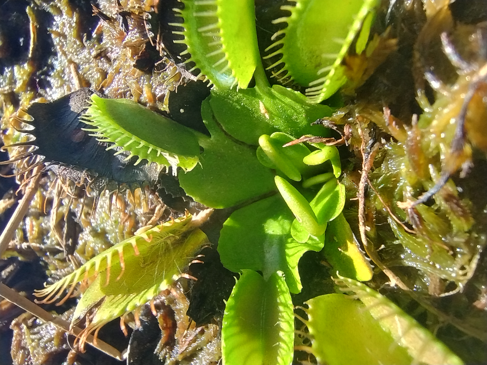
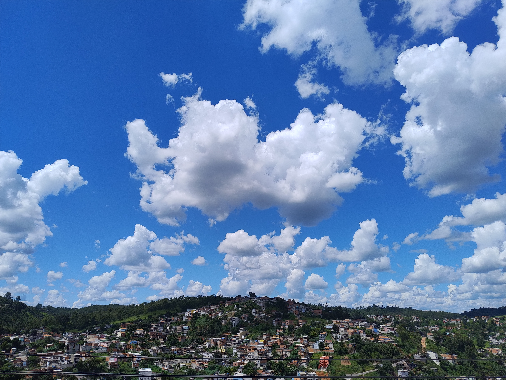
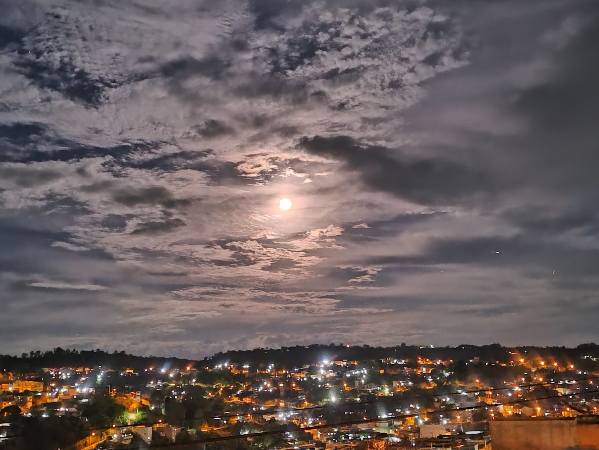
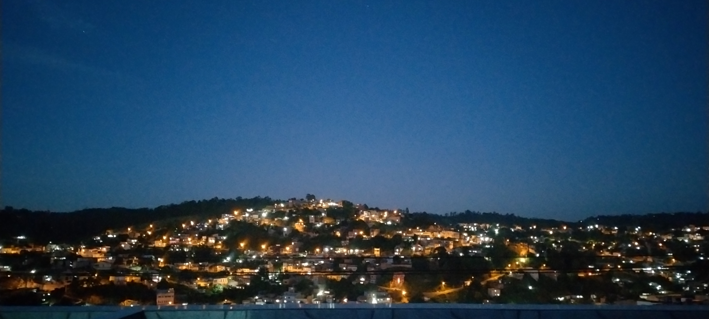

O mundo é tão grande mas ao mesmo tempo tão pequeno... Muitas vezes na nossa rotina acabamos ignorando as coisas em nossa volta, ver a beleza da nossa vida, as paisagens urbanas e naturais do nosso dia-a-dia, faz a gente se conectar com o ambiente e senti-lo. E podemos registrar esses momentos através da fotografia, onde nela se guarda as memórias e sentimentos
Dar significado aos lugares comuns.
Meu gosto por fotografia começou quando ainda era pequeno, mesmo eu não sendo um profissional em tirar fotos é algo que eu gosto bastante pois com isso consigo registrar momentos em que observo algo e acho bonito. É uma forma de sentir liberdade, pois fica guardado em cada foto cada momento que você vivênciou.



